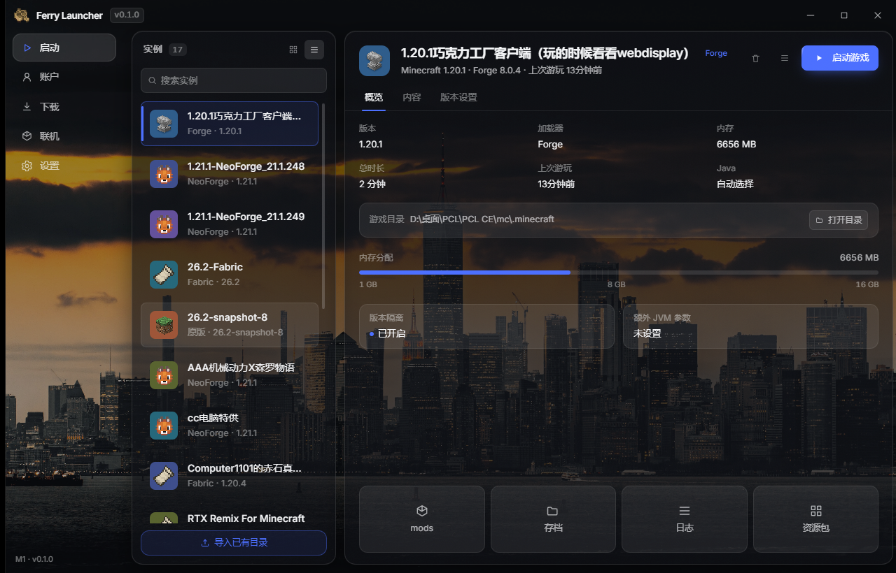

导入已有游戏
选一个 .minecraft 目录,里面所有版本一次性加进来。PCL / HMCL 那种版本隔离布局也能认出来。
单个 exe,不用装运行库,双击就跑。 把版本、资源、模组、账户和联机都交给它,你只管玩游戏。

从导入老存档到联机开服,一条链路打通。
选一个 .minecraft 目录,里面所有版本一次性加进来。PCL / HMCL 那种版本隔离布局也能认出来。
原版、Fabric、Forge、NeoForge、Quilt 全支持。官方源与 BMCLAPI 镜像自动切换,镜像抽风自动回退。
LittleSkin 外置登录、微软登录、离线账户。多角色切换,令牌静默刷新,还有 3D 皮肤预览。
按实例看 mod、存档、日志、资源包。预览、启停、删除、导入、查更新,mod 元数据直接从 jar 里读。
陶瓦联机与 EasyTier 直连,房间码生成与解析。不用公网 IP,运行时还能在应用内一键下载安装。
多线程扫描本机 Java,含 PCL 自带的 JRE。1.21+ 缺 Java 21 时可一键从清华镜像下载,启动前自动校验版本。
Mod、整合包、数据包、资源包、光影包,可按名称、来源、版本、加载器、分类筛选,结果分页浏览。选中后指定实例一键安装并实时显示进度。
游戏异常退出时自动读日志与 crash-reports,匹配 Java 版本、内存不足、缺前置、Mod 冲突、显卡驱动等十余种常见问题,直接给出原因和修复建议。
后端单条命令出错只让那次调用失败,不会带走整个进程;互斥锁能从毒锁恢复;渲染层有错误边界,组件报错不会白屏。
点选标签,看看不同页面的样子。
Tauri 2 壳 + Rust 后端,渲染层碰不到 Node 和文件系统。命令白名单 IPC、严格 CSP,该有的安全一个不少。
# 数据目录
%APPDATA%\ferry-launcher
├─ instances # 实例
├─ accounts # 账户
└─ settings # 设置
# 单文件静态链接
FerryLauncher-0.1.2.exe
≈ 8.8 MB · 免 VC 运行库下载即可运行,无需安装、无需运行库。当前版本 v0.1.2,支持 Windows x64。
WebView2 需系统自带或安装 Evergreen Runtime